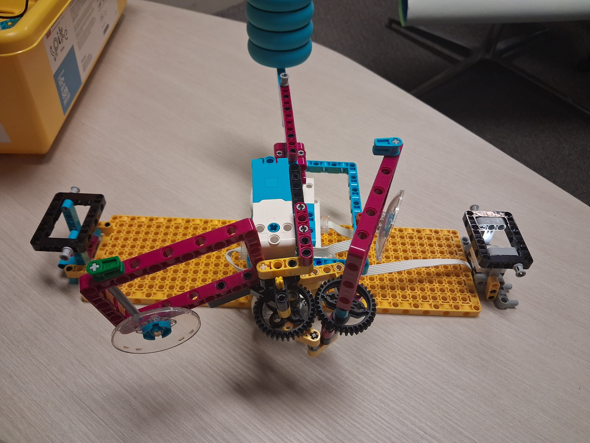
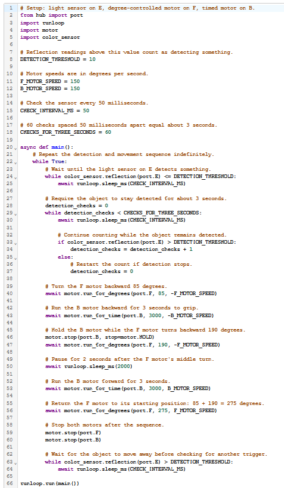

Project Portfolio

Project 09: Robotic Arm
This robotic arm uses a light sensor and two motors to respond to an object. The Python program waits for the sensor to detect something, then runs a timed sequence to move the arm and operate its grip.
How the code works
The program checks the light sensor on port E every 50 milliseconds. A reflection reading above 10 counts as a detection. It requires the detection to continue for about three seconds before starting the movement sequence, which helps prevent a brief sensor reading from triggering the arm.
Once an object is detected, motor F turns backward by 85 degrees, and motor B runs backward for three seconds to grip. Motor B is then held while motor F turns another 190 degrees. After a two-second pause, motor B runs forward for three seconds to release. Motor F then turns to 275 degrees, and both motors stop. The program waits until the sensor no longer detects the object before checking for another one.
The motor speeds are set to 150 degrees per second. The repeated checks and movement sequence run inside a loop, so the arm can repeat the process.
Python Program
